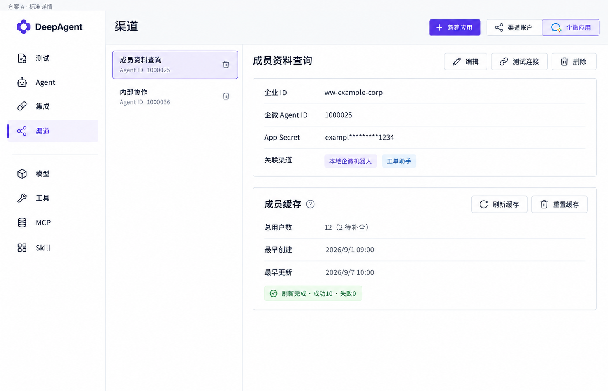

<!doctype html><html lang="zh-CN"><meta charset="utf-8"><meta name="viewport" content="width=device-width,initial-scale=1"><title>企微应用 · 三个视觉方案</title><style>body{margin:0;background:#f5f7fb;color:#202735;font:14px -apple-system,BlinkMacSystemFont,"Segoe UI",sans-serif}header{padding:22px 30px;background:white;border-bottom:1px solid #dbe1ea;position:sticky;top:0}h1{font-size:20px;margin:0 0 10px}p{color:#667085;margin:8px 0}nav{display:flex;gap:8px}button{font:inherit;padding:8px 14px;background:white;border:1px solid #cdd5e2;border-radius:7px;cursor:pointer}button[aria-pressed=true]{color:#5146ed;border-color:#5146ed;background:#efedff}main{max-width:1564px;margin:22px auto;padding:0 24px}img{width:100%;height:auto;border:1px solid #dbe1ea;border-radius:10px;background:white}a{color:#5146ed}</style><header><h1>企微应用 · 三个视觉方案</h1><p>图片方案用于比较布局；实际页面已按本轮批注统一现有控件、字号及图标。</p><nav><button data-key="A" aria-pressed="true">A · 标准详情</button><button data-key="B" aria-pressed="false">B · 紧凑分栏</button><button data-key="C" aria-pressed="false">C · 统一面板与确认浮层</button></nav></header><main><p id="caption">应用信息纵向排列，成员缓存独立在下方。</p><a id="original" href="A.png" target="_blank"></a></main><script>const captions={A:'应用信息纵向排列，成员缓存独立在下方。',B:'应用信息两列排列，缓存统计紧凑横排。',C:'统一面板内划分信息区域，展示刷新缓存的锚定确认浮层。'};document.querySelectorAll('button').forEach(b=>b.onclick=()=>{document.querySelectorAll('button').forEach(x=>x.setAttribute('aria-pressed',String(x===b)));const k=b.dataset.key;document.querySelector('#preview').src=k+'.png';document.querySelector('#preview').alt=b.textContent;document.querySelector('#original').href=k+'.png';document.querySelector('#caption').textContent=captions[k]});</script></html>